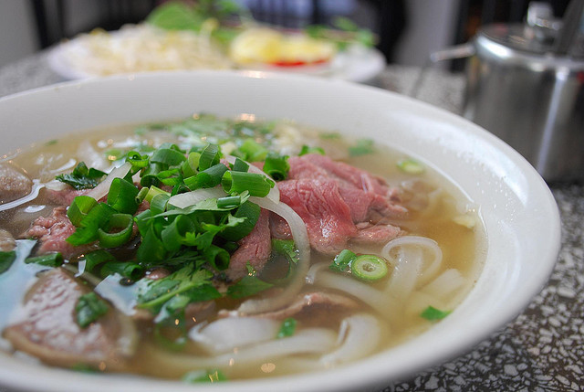
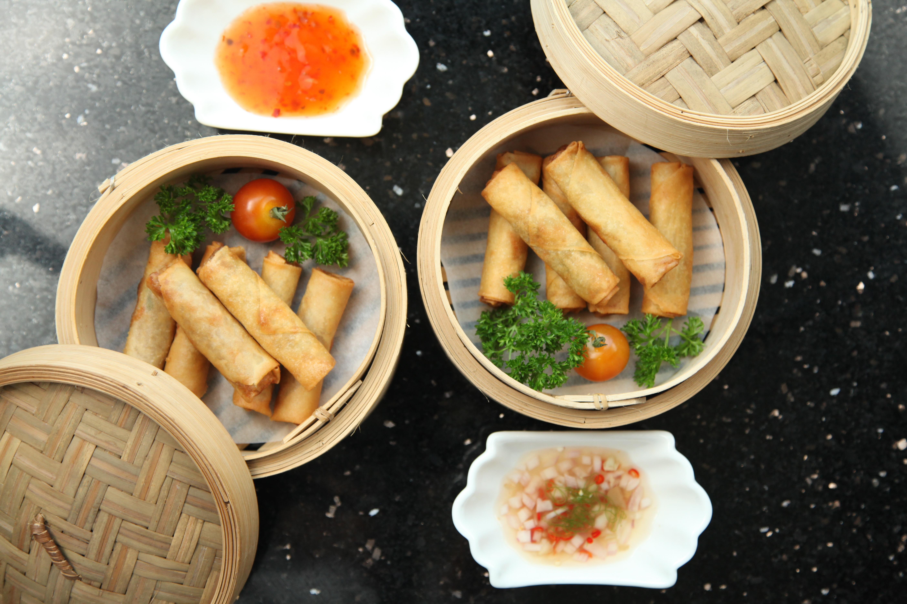
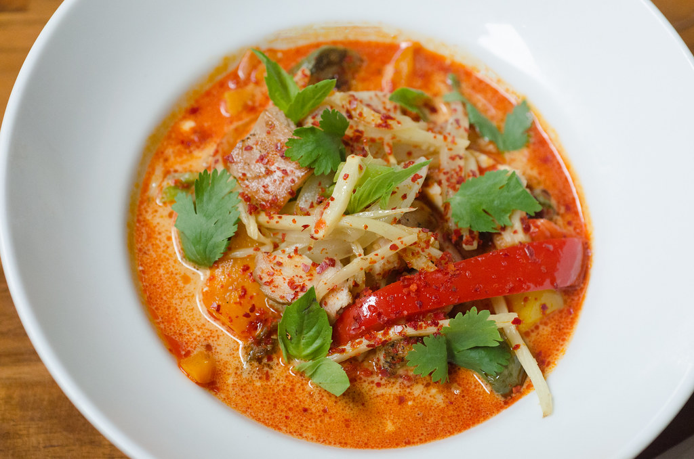

Chicken Pho
Photo by: Global Panorama
Egg Rolls
Photo by: Bryon Lippincott
Thai Panang Red Curry
Photo by: Kurman Communications
Chicken Pho
October 19, 2019
Pho is a classic Vietnamese noodle soup bowl. This recipe is for a chicken broth rather than the beef broth you will typically have at a restaurant. My mom used to always make the beef broth, but ever since my Uncle from France visited Seattle and shared his chicken broth recipe, my mom has only made this broth ever since. I do like the chicken broth better because it is more light and usually less salty than the beef. The ingredients list may look intimidating, but pho includes a variety of toppings and condiments. We typically use all of it from bean sprouts to garlic chili oil, but it is up to you! One note to add about this recipe is that the longer the pho broth is boiled, the better the taste and flavor. Enjoy!
Photo by: Global Panorama
Ingredients
Servings: 4-6
- 1 half or whole chicken as stalk
- 1 ginger root
- 1 white or yellow onion
- 2 shallots
- 1 cinammon stick
- dried cardamom
- star anis
- green onions
- cilantro
- jalapeno
- basil
- lime
- bean sprouts
- kosher salt
- sugar or rock sugar
- fish sauce
- black pepper or white pepper
- fresh rice noodles or dried pho noodles
Condiments & Optional
- beef/pork/chicken meatballs (optional)
- wonton soup base and chicken bouillion (optional)
- hoison sauce
- sriracha
- garlic chili oil
Steps
- Boil a pot of water for the stalk.
- Clean chicken and put inside the boiling water with some salt. The chicken should be boiled for about 45 minutes to an hour until it is cooked.
- While this is cooking, prepare and bake peeled ginger, cinnamon stick, dried cardamom, star anis, and 1 whole onion (unchopped) for 20 minutes or until there is an aroma.
- Place these ingredients from the oven into the boiling pot for aromatics.
- Take out any excess unwanted chicken scum and bubbles from the top of the soup for clear broth.
- Once the chicken is done cooking, take it out for to be cooled and shredded as a topping with meatballs.
- In the pot, add 2 tablespoons of sugar, 2 tablespoons of salt, and 2 tablespoons of fish sauce, and 1 pack of wonton souop base, and chicken bouillion.
- Cut meatballs (optional) in half and add to the pho broth.
- While the soup is simmering, prepare the noodle bowl.
- Wash basil, bean sprouts, onions, lime, and cilantro. These ingredients will be the garnish.
- Chop green onions, jalapeno, and cilantro, and slice lime wedges onto a plate for you to add however much you'd like.
- Boil a separate small pot of water.
- Once the water is boiling, dip fresh rice or dried noodles into water with a strainer for 1 minute and place into a serving soup bowl.
- Add all washed and chopped garnishes and condiments such as hoisin sauce, sriracha, and garlic chili oil to your liking.